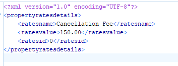

Introduction
Orbis Technologies develops and maintains enterprise CCMS software, solutions, and services to organizations worldwide. Orbis provide solutions to clients across various industries that including manufacturing, healthcare, publishing, healthcare insurance, education industries and the federal government. Table 1
Table 1.
Thead | Thead | Thead | Thead |
Well written software offers many advantages. | Well written software offers many advantages. | Well written software offers many advantages. | Well written software offers many advantages. |
Well written software offers many advantages. It will contain fewer bugs and will run more efficiently than poorly written programs. Since software has a life cycle and much of which revolves around maintenance, it will be easier for the original developer(s) and future keepers of the code to maintain and modify the software as needed. This will lead to increased productivity of the developer(s). The overall cost of the software is greatly reduced when the code is developed and maintained according to software standards. Table 1
The goal of these guidelines is to create uniform coding habits among software personnel in the engineering department so that reading, checking, and maintaining code written by different persons becomes easier. The intent of these standards is to define a natural style and consistency yet leave to the authors of the engineering department source code, the freedom to practice their craft without unnecessary burden.